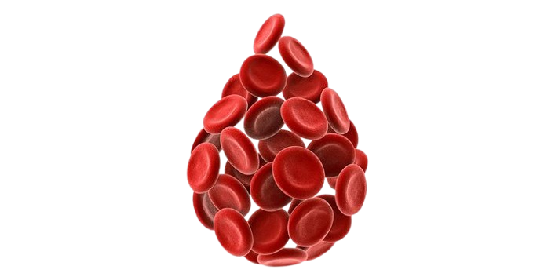
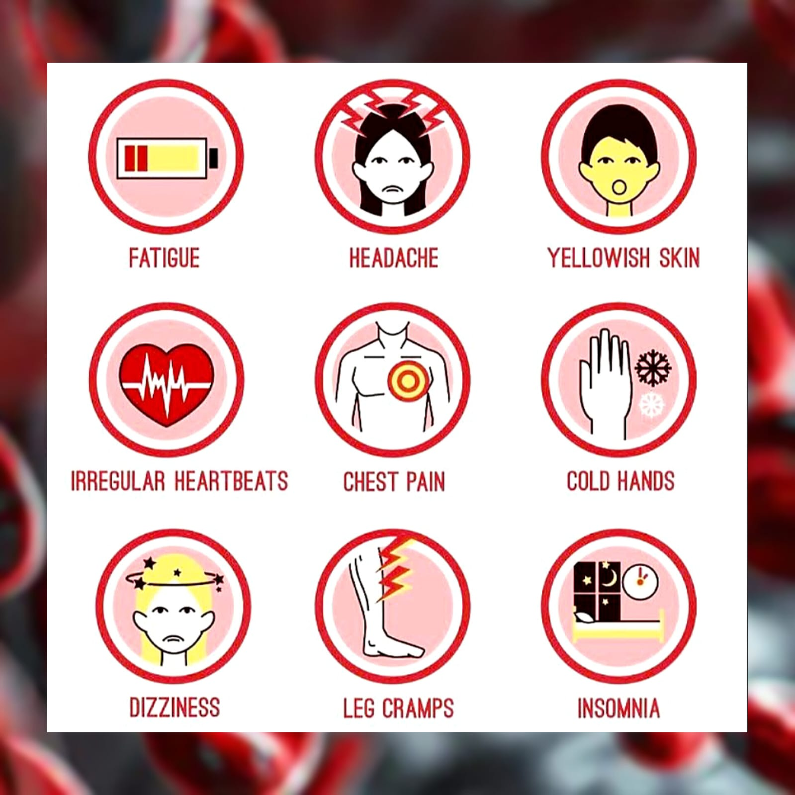

A clinical-grade Fuzzy Inference System that interprets your CBC report and delivers confidence-scored diagnosis across three anemia subtypes — handling medical uncertainty the way expert physicians do.

Anemia is a clinical condition defined by a reduction in the concentration of hemoglobin (Hb) in red blood cells — the protein responsible for transporting oxygen from the lungs to every tissue in the body. When Hb falls below normal thresholds, cells become starved of oxygen, leading to systemic symptoms.
The World Health Organization defines anemia as Hb < 13 g/dL in adult men and < 12 g/dL in adult women. However, the subtype of anemia is equally critical — determining it requires interpreting a Complete Blood Count (CBC) with nuanced clinical judgment, particularly since diagnostic boundaries are inherently vague and context-dependent.
This is precisely where Fuzzy Logic excels: modelling the uncertainty and gradations that define real clinical decision-making.
Characterised by abnormally small RBCs, typically with low haemoglobin content per cell. The most prevalent form globally, often linked to nutritional or genetic causes.
RBCs are normal in size and haemoglobin content, but insufficient in number. Often a secondary manifestation of systemic disease or acute haematological events.
Characterised by abnormally enlarged RBCs that cannot effectively carry oxygen. Typically results from impaired DNA synthesis affecting cell maturation.
A Complete Blood Count is the cornerstone of anemia diagnosis. Our FIS system interprets four key CBC parameters — each providing distinct insight into the nature and severity of the condition.
The challenge lies in the inherently vague boundaries between "low" and "normal" — thresholds that shift with age, sex, altitude, and ethnicity. Fuzzy membership functions elegantly model these gradations.

Enter your Complete Blood Count values below. Our 12-rule Mamdani Fuzzy Inference System will compute confidence scores for all three anemia subtypes — providing clinically-reasoned output.
—
—
Medical Disclaimer: This tool is designed for educational and research purposes as part of AIC 201 — Artificial Intelligence coursework at Bahria University. It implements a Fuzzy Inference System based on published haematological guidelines. This system does not constitute medical advice and must not replace clinical evaluation by a qualified physician. Always consult a healthcare professional for diagnosis and treatment decisions.
Our system implements a complete Mamdani Fuzzy Inference System pipeline — from raw CBC data through fuzzification, rule evaluation, aggregation, and defuzzification — to produce a clinically meaningful diagnosis confidence score.
The approach was chosen specifically for its interpretability: each fuzzy rule maps directly to real clinical reasoning, making the system explainable to physicians, unlike black-box neural networks.
Loaded the provided CBC dataset (Excel), cleaned missing values, mapped diagnoses to 3 groups (A/B/C), and applied Gaussian-noise SMOTE augmentation to reach 60+ patients per class for balanced training.
Defined trapezoidal and triangular membership functions for all 4 inputs (Hb, MCV, MCH, RDW) with clinically-validated linguistic terms. Gaussian MFs applied to outputs for smooth, continuous scoring.
Each crisp CBC input value is transformed into degrees of membership across all linguistic terms simultaneously — e.g., an Hb of 9 g/dL has partial membership in both "Low" and "Normal" categories.
12 expert-derived IF-THEN rules are fired in parallel. Each rule computes its activation strength using the AND operator (minimum T-norm), producing a clipped output membership function.
All rule outputs are combined via maximum aggregation. The centroid defuzzification method converts the resulting fuzzy set into a crisp diagnosis confidence score in the [0,1] range for each subtype.
Each rule encodes a distinct clinical pattern derived from haematological literature and physician expertise. Rules are weighted differently — "classic" presentations fire with high confidence; borderline patterns produce medium scores.
In low-income regions where specialist haematologists are scarce, an AI-assisted FIS provides frontline clinicians with structured diagnostic reasoning — reducing misdiagnosis rates in communities with high anemia burden.
Unlike neural networks, fuzzy rules are directly interpretable by physicians. Each diagnosis output traces back to specific IF-THEN rules — enabling clinicians to validate, audit, and trust the system's reasoning.
Instant CBC interpretation eliminates delays between blood draw and subtype classification. Faster differentiation between iron deficiency and thalassemia directly impacts treatment protocols and prevents inappropriate iron supplementation.
Children and pregnant women — the most vulnerable populations — benefit most from rapid anemia subtyping. Early correct diagnosis prevents developmental delays in children and maternal complications during pregnancy.
The system can process large-scale CBC datasets to identify anemia patterns across communities — enabling public health interventions, nutritional supplementation programmes, and targeted screening campaigns.
Pairing the FIS with Random Forest and XGBoost classifiers (as implemented) creates a hybrid AI system — the FIS provides explainability while ML models provide statistical validation and confidence benchmarking.